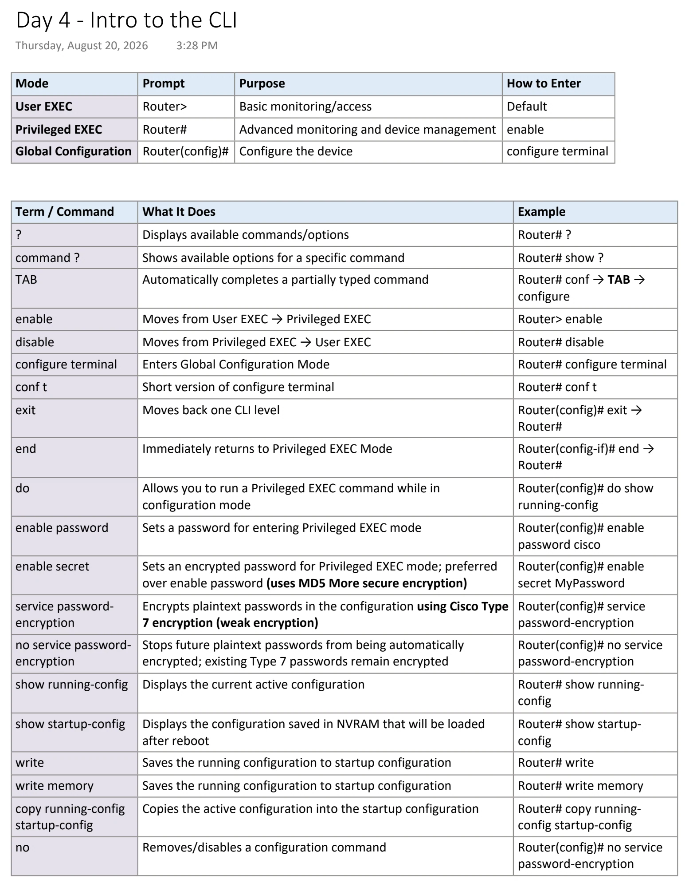
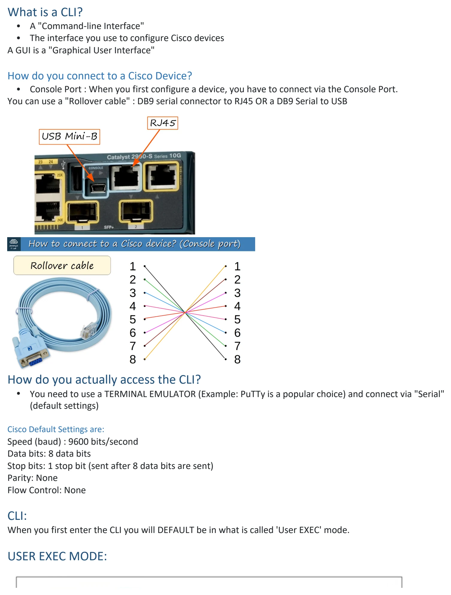
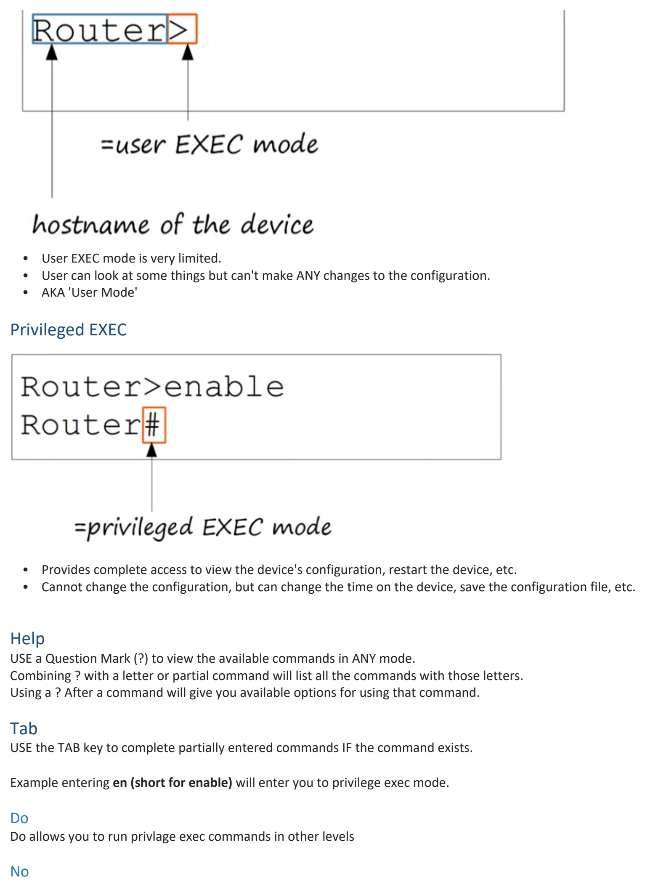
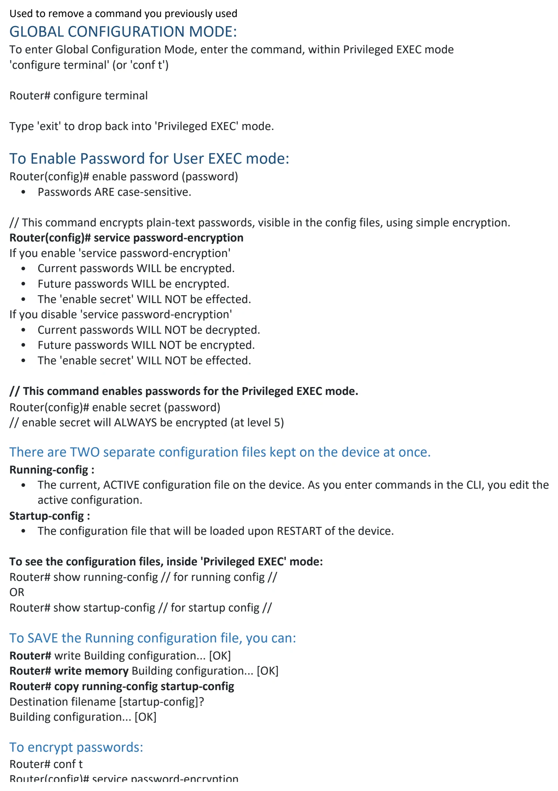
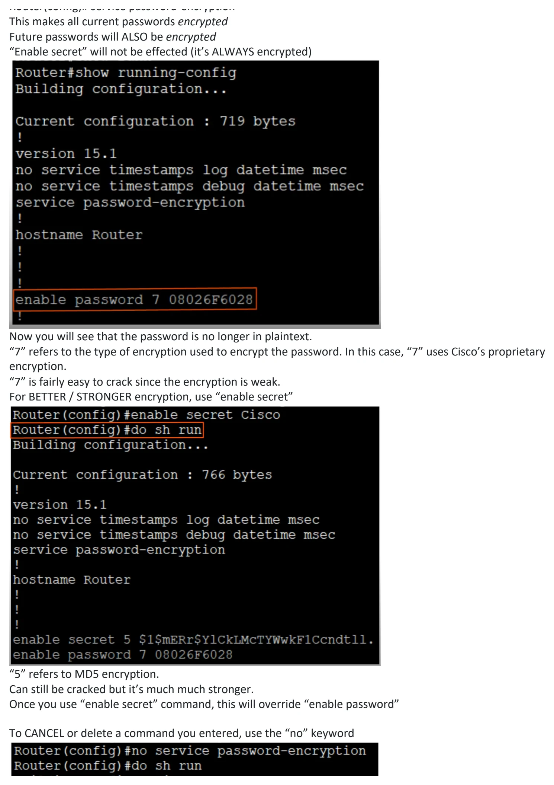
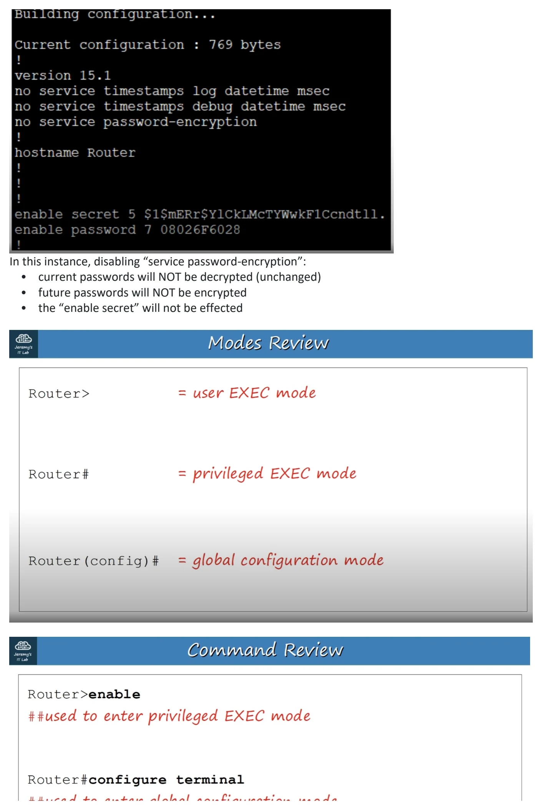
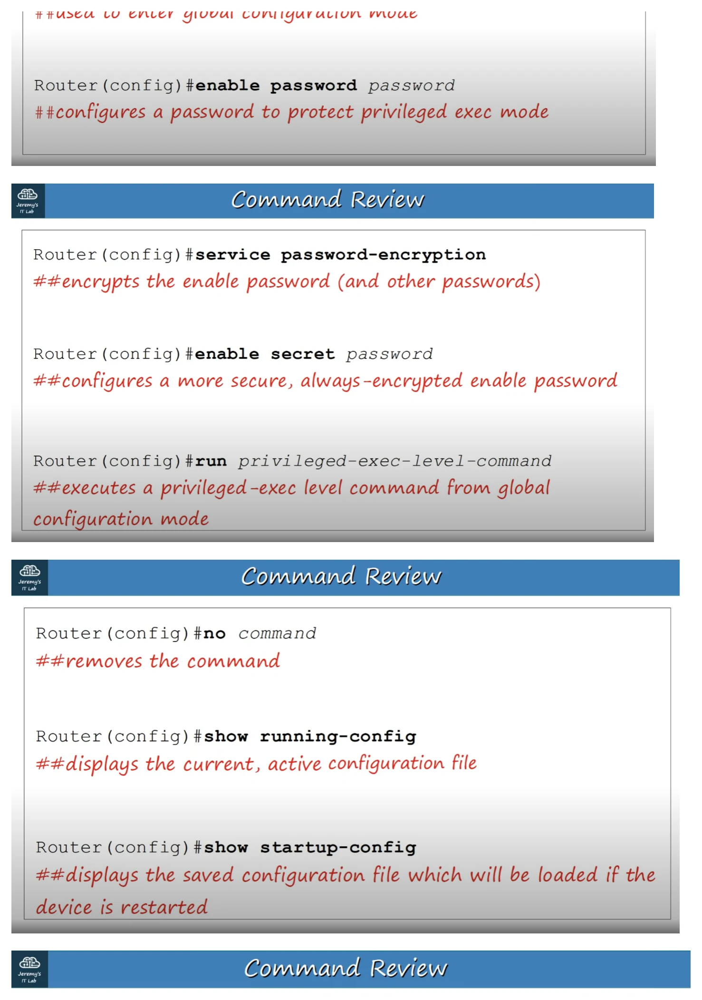
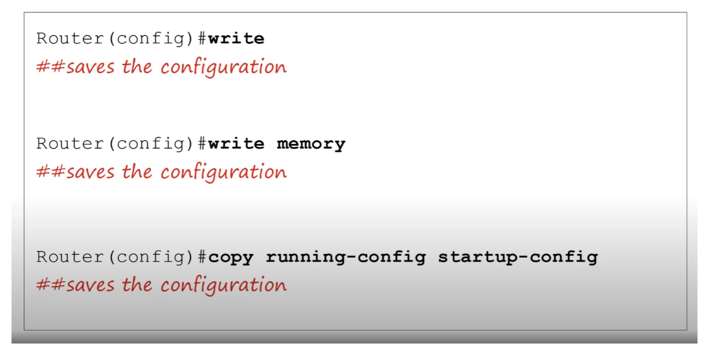

Intro to the CLI
Download original PDF







Text view — Intro to the CLI
Extracted from the original export. Diagrams and some formatting appear in the notes above.
Day 4 - Intro to the CLI Thursday, August 20, 2026 3:28 PM Mode Prompt Purpose How to Enter User EXEC Router> Basic monitoring/access Default Privileged EXEC Router# Advanced monitoring and device management enable Global Configuration Router(config)# Configure the device configure terminal Term / Command What It Does Example ? Displays available commands/options Router# ? command ? Shows available options for a specific command Router# show ? TAB Automatically completes a partially typed command Router# conf → TAB → configure enable Moves from User EXEC → Privileged EXEC Router> enable disable Moves from Privileged EXEC → User EXEC Router# disable configure terminal Enters Global Configuration Mode Router# configure terminal conf t Short version of configure terminal Router# conf t exit Moves back one CLI level Router(config)# exit → Router# end Immediately returns to Privileged EXEC Mode Router(config-if)# end → Router# do Allows you to run a Privileged EXEC command while in Router(config)# do show configuration mode running-config enable password Sets a password for entering Privileged EXEC mode Router(config)# enable password cisco enable secret Sets an encrypted password for Privileged EXEC mode; preferred Router(config)# enable over enable password (uses MD5 More secure encryption) secret MyPassword service password- Encrypts plaintext passwords in the configuration using Cisco Type Router(config)# service encryption 7 encryption (weak encryption) password-encryption no service password- Stops future plaintext passwords from being automatically Router(config)# no service encryption encrypted; existing Type 7 passwords remain encrypted password-encryption show running-config Displays the current active configuration Router# show running- config show startup-config Displays the configuration saved in NVRAM that will be loaded Router# show startup- after reboot config write Saves the running configuration to startup configuration Router# write write memory Saves the running configuration to startup configuration Router# write memory copy running-config Copies the active configuration into the startup configuration Router# copy running- startup-config config startup-config no Removes/disables a configuration command Router(config)# no service password-encryption What is a CLI? • A "Command-line Interface" • The interface you use to configure Cisco devices A GUI is a "Graphical User Interface" How do you connect to a Cisco Device? • Console Port : When you first configure a device, you have to connect via the Console Port. You can use a "Rollover cable" : DB9 serial connector to RJ45 OR a DB9 Serial to USB How do you actually access the CLI? • You need to use a TERMINAL EMULATOR (Example: PuTTy is a popular choice) and connect via "Serial" (default settings) Cisco Default Settings are: Speed (baud) : 9600 bits/second Data bits: 8 data bits Stop bits: 1 stop bit (sent after 8 data bits are sent) Parity: None Flow Control: None CLI: When you first enter the CLI you will DEFAULT be in what is called 'User EXEC' mode. USER EXEC MODE: • User EXEC mode is very limited. • User can look at some things but can't make ANY changes to the configuration. • AKA 'User Mode' Privileged EXEC • Provides complete access to view the device's configuration, restart the device, etc. • Cannot change the configuration, but can change the time on the device, save the configuration file, etc. Help USE a Question Mark (?) to view the available commands in ANY mode. Combining ? with a letter or partial command will list all the commands with those letters. Using a ? After a command will give you available options for using that command. Tab USE the TAB key to complete partially entered commands IF the command exists. Example entering en (short for enable) will enter you to privilege exec mode. Do Do allows you to run privlage exec commands in other levels No Used to remove a command you previously used GLOBAL CONFIGURATION MODE: To enter Global Configuration Mode, enter the command, within Privileged EXEC mode 'configure terminal' (or 'conf t') Router# configure terminal Type 'exit' to drop back into 'Privileged EXEC' mode. To Enable Password for User EXEC mode: Router(config)# enable password (password) • Passwords ARE case-sensitive. // This command encrypts plain-text passwords, visible in the config files, using simple encryption. Router(config)# service password-encryption If you enable 'service password-encryption' • Current passwords WILL be encrypted. • Future passwords WILL be encrypted. • The 'enable secret' WILL NOT be effected. If you disable 'service password-encryption' • Current passwords WILL NOT be decrypted. • Future passwords WILL NOT be encrypted. • The 'enable secret' WILL NOT be effected. // This command enables passwords for the Privileged EXEC mode. Router(config)# enable secret (password) // enable secret will ALWAYS be encrypted (at level 5) There are TWO separate configuration files kept on the device at once. Running-config : • The current, ACTIVE configuration file on the device. As you enter commands in the CLI, you edit the active configuration. Startup-config : • The configuration file that will be loaded upon RESTART of the device. To see the configuration files, inside 'Privileged EXEC' mode: Router# show running-config // for running config // OR Router# show startup-config // for startup config // To SAVE the Running configuration file, you can: Router# write Building configuration... [OK] Router# write memory Building configuration... [OK] Router# copy running-config startup-config Destination filename [startup-config]? Building configuration... [OK] To encrypt passwords: Router# conf t Router(config)# service password-encryption This makes all current passwords encrypted Future passwords will ALSO be encrypted “Enable secret” will not be effected (it’s ALWAYS encrypted) Now you will see that the password is no longer in plaintext. “7” refers to the type of encryption used to encrypt the password. In this case, “7” uses Cisco’s proprietary encryption. “7” is fairly easy to crack since the encryption is weak. For BETTER / STRONGER encryption, use “enable secret” “5” refers to MD5 encryption. Can still be cracked but it’s much much stronger. Once you use “enable secret” command, this will override “enable password” To CANCEL or delete a command you entered, use the “no” keyword In this instance, disabling “service password-encryption”: • current passwords will NOT be decrypted (unchanged) • future passwords will NOT be encrypted • the “enable secret” will not be effected Day 4 - Intro to the CLI Thursday, August 20, 2026 3:28 PM Mode Prompt Purpose How to Enter User EXEC Router> Basic monitoring/access Default Privileged EXEC Router# Advanced monitoring and device management enable Global Configuration Router(config)# Configure the device configure terminal Term / Command What It Does Example ? Displays available commands/options Router# ? command ? Shows available options for a specific command Router# show ? TAB Automatically completes a partially typed command Router# conf → TAB → configure enable Moves from User EXEC → Privileged EXEC Router> enable disable Moves from Privileged EXEC → User EXEC Router# disable configure terminal Enters Global Configuration Mode Router# configure terminal conf t Short version of configure terminal Router# conf t exit Moves back one CLI level Router(config)# exit → Router# end Immediately returns to Privileged EXEC Mode Router(config-if)# end → Router# do Allows you to run a Privileged EXEC command while in Router(config)# do show configuration mode running-config enable password Sets a password for entering Privileged EXEC mode Router(config)# enable password cisco enable secret Sets an encrypted password for Privileged EXEC mode; preferred Router(config)# enable over enable password (uses MD5 More secure encryption) secret MyPassword service password- Encrypts plaintext passwords in the configuration using Cisco Type Router(config)# service encryption 7 encryption (weak encryption) password-encryption no service password- Stops future plaintext passwords from being automatically Router(config)# no service encryption encrypted; existing Type 7 passwords remain encrypted password-encryption show running-config Displays the current active configuration Router# show running- config show startup-config Displays the configuration saved in NVRAM that will be loaded Router# show startup- after reboot config write Saves the running configuration to startup configuration Router# write write memory Saves the running configuration to startup configuration Router# write memory copy running-config Copies the active configuration into the startup configuration Router# copy running- startup-config config startup-config no Removes/disables a configuration command Router(config)# no service password-encryption What is a CLI? • A "Command-line Interface" • The interface you use to configure Cisco devices A GUI is a "Graphical User Interface" How do you connect to a Cisco Device? • Console Port : When you first configure a device, you have to connect via the Console Port. You can use a "Rollover cable" : DB9 serial connector to RJ45 OR a DB9 Serial to USB How do you actually access the CLI? • You need to use a TERMINAL EMULATOR (Example: PuTTy is a popular choice) and connect via "Serial" (default settings) Cisco Default Settings are: Speed (baud) : 9600 bits/second Data bits: 8 data bits Stop bits: 1 stop bit (sent after 8 data bits are sent) Parity: None Flow Control: None CLI: When you first enter the CLI you will DEFAULT be in what is called 'User EXEC' mode. USER EXEC MODE: • User EXEC mode is very limited. • User can look at some things but can't make ANY changes to the configuration. • AKA 'User Mode' Privileged EXEC • Provides complete access to view the device's configuration, restart the device, etc. • Cannot change the configuration, but can change the time on the device, save the configuration file, etc. Help USE a Question Mark (?) to view the available commands in ANY mode. Combining ? with a letter or partial command will list all the commands with those letters. Using a ? After a command will give you available options for using that command. Tab USE the TAB key to complete partially entered commands IF the command exists. Example entering en (short for enable) will enter you to privilege exec mode. Do Do allows you to run privlage exec commands in other levels No Used to remove a command you previously used GLOBAL CONFIGURATION MODE: To enter Global Configuration Mode, enter the command, within Privileged EXEC mode 'configure terminal' (or 'conf t') Router# configure terminal Type 'exit' to drop back into 'Privileged EXEC' mode. To Enable Password for User EXEC mode: Router(config)# enable password (password) • Passwords ARE case-sensitive. // This command encrypts plain-text passwords, visible in the config files, using simple encryption. Router(config)# service password-encryption If you enable 'service password-encryption' • Current passwords WILL be encrypted. • Future passwords WILL be encrypted. • The 'enable secret' WILL NOT be effected. If you disable 'service password-encryption' • Current passwords WILL NOT be decrypted. • Future passwords WILL NOT be encrypted. • The 'enable secret' WILL NOT be effected. // This command enables passwords for the Privileged EXEC mode. Router(config)# enable secret (password) // enable secret will ALWAYS be encrypted (at level 5) There are TWO separate configuration files kept on the device at once. Running-config : • The current, ACTIVE configuration file on the device. As you enter commands in the CLI, you edit the active configuration. Startup-config : • The configuration file that will be loaded upon RESTART of the device. To see the configuration files, inside 'Privileged EXEC' mode: Router# show running-config // for running config // OR Router# show startup-config // for startup config // To SAVE the Running configuration file, you can: Router# write Building configuration... [OK] Router# write memory Building configuration... [OK] Router# copy running-config startup-config Destination filename [startup-config]? Building configuration... [OK] To encrypt passwords: Router# conf t Router(config)# service password-encryption This makes all current passwords encrypted Future passwords will ALSO be encrypted “Enable secret” will not be effected (it’s ALWAYS encrypted) Now you will see that the password is no longer in plaintext. “7” refers to the type of encryption used to encrypt the password. In this case, “7” uses Cisco’s proprietary encryption. “7” is fairly easy to crack since the encryption is weak. For BETTER / STRONGER encryption, use “enable secret” “5” refers to MD5 encryption. Can still be cracked but it’s much much stronger. Once you use “enable secret” command, this will override “enable password” To CANCEL or delete a command you entered, use the “no” keyword In this instance, disabling “service password-encryption”: • current passwords will NOT be decrypted (unchanged) • future passwords will NOT be encrypted • the “enable secret” will not be effected Day 4 - Intro to the CLI Thursday, August 20, 2026 3:28 PM Mode Prompt Purpose How to Enter User EXEC Router> Basic monitoring/access Default Privileged EXEC Router# Advanced monitoring and device management enable Global Configuration Router(config)# Configure the device configure terminal Term / Command What It Does Example ? Displays available commands/options Router# ? command ? Shows available options for a specific command Router# show ? TAB Automatically completes a partially typed command Router# conf → TAB → configure enable Moves from User EXEC → Privileged EXEC Router> enable disable Moves from Privileged EXEC → User EXEC Router# disable configure terminal Enters Global Configuration Mode Router# configure terminal conf t Short version of configure terminal Router# conf t exit Moves back one CLI level Router(config)# exit → Router# end Immediately returns to Privileged EXEC Mode Router(config-if)# end → Router# do Allows you to run a Privileged EXEC command while in Router(config)# do show configuration mode running-config enable password Sets a password for entering Privileged EXEC mode Router(config)# enable password cisco enable secret Sets an encrypted password for Privileged EXEC mode; preferred Router(config)# enable over enable password (uses MD5 More secure encryption) secret MyPassword service password- Encrypts plaintext passwords in the configuration using Cisco Type Router(config)# service encryption 7 encryption (weak encryption) password-encryption no service password- Stops future plaintext passwords from being automatically Router(config)# no service encryption encrypted; existing Type 7 passwords remain encrypted password-encryption show running-config Displays the current active configuration Router# show running- config show startup-config Displays the configuration saved in NVRAM that will be loaded Router# show startup- after reboot config write Saves the running configuration to startup configuration Router# write write memory Saves the running configuration to startup configuration Router# write memory copy running-config Copies the active configuration into the startup configuration Router# copy running- startup-config config startup-config no Removes/disables a configuration command Router(config)# no service password-encryption What is a CLI? • A "Command-line Interface" • The interface you use to configure Cisco devices A GUI is a "Graphical User Interface" How do you connect to a Cisco Device? • Console Port : When you first configure a device, you have to connect via the Console Port. You can use a "Rollover cable" : DB9 serial connector to RJ45 OR a DB9 Serial to USB How do you actually access the CLI? • You need to use a TERMINAL EMULATOR (Example: PuTTy is a popular choice) and connect via "Serial" (default settings) Cisco Default Settings are: Speed (baud) : 9600 bits/second Data bits: 8 data bits Stop bits: 1 stop bit (sent after 8 data bits are sent) Parity: None Flow Control: None CLI: When you first enter the CLI you will DEFAULT be in what is called 'User EXEC' mode. USER EXEC MODE: • User EXEC mode is very limited. • User can look at some things but can't make ANY changes to the configuration. • AKA 'User Mode' Privileged EXEC • Provides complete access to view the device's configuration, restart the device, etc. • Cannot change the configuration, but can change the time on the device, save the configuration file, etc. Help USE a Question Mark (?) to view the available commands in ANY mode. Combining ? with a letter or partial command will list all the commands with those letters. Using a ? After a command will give you available options for using that command. Tab USE the TAB key to complete partially entered commands IF the command exists. Example entering en (short for enable) will enter you to privilege exec mode. Do Do allows you to run privlage exec commands in other levels No Used to remove a command you previously used GLOBAL CONFIGURATION MODE: To enter Global Configuration Mode, enter the command, within Privileged EXEC mode 'configure terminal' (or 'conf t') Router# configure terminal Type 'exit' to drop back into 'Privileged EXEC' mode. To Enable Password for User EXEC mode: Router(config)# enable password (password) • Passwords ARE case-sensitive. // This command encrypts plain-text passwords, visible in the config files, using simple encryption. Router(config)# service password-encryption If you enable 'service password-encryption' • Current passwords WILL be encrypted. • Future passwords WILL be encrypted. • The 'enable secret' WILL NOT be effected. If you disable 'service password-encryption' • Current passwords WILL NOT be decrypted. • Future passwords WILL NOT be encrypted. • The 'enable secret' WILL NOT be effected. // This command enables passwords for the Privileged EXEC mode. Router(config)# enable secret (password) // enable secret will ALWAYS be encrypted (at level 5) There are TWO separate configuration files kept on the device at once. Running-config : • The current, ACTIVE configuration file on the device. As you enter commands in the CLI, you edit the active configuration. Startup-config : • The configuration file that will be loaded upon RESTART of the device. To see the configuration files, inside 'Privileged EXEC' mode: Router# show running-config // for running config // OR Router# show startup-config // for startup config // To SAVE the Running configuration file, you can: Router# write Building configuration... [OK] Router# write memory Building configuration... [OK] Router# copy running-config startup-config Destination filename [startup-config]? Building configuration... [OK] To encrypt passwords: Router# conf t Router(config)# service password-encryption This makes all current passwords encrypted Future passwords will ALSO be encrypted “Enable secret” will not be effected (it’s ALWAYS encrypted) Now you will see that the password is no longer in plaintext. “7” refers to the type of encryption used to encrypt the password. In this case, “7” uses Cisco’s proprietary encryption. “7” is fairly easy to crack since the encryption is weak. For BETTER / STRONGER encryption, use “enable secret” “5” refers to MD5 encryption. Can still be cracked but it’s much much stronger. Once you use “enable secret” command, this will override “enable password” To CANCEL or delete a command you entered, use the “no” keyword In this instance, disabling “service password-encryption”: • current passwords will NOT be decrypted (unchanged) • future passwords will NOT be encrypted • the “enable secret” will not be effected Day 4 - Intro to the CLI Thursday, August 20, 2026 3:28 PM Mode Prompt Purpose How to Enter User EXEC Router> Basic monitoring/access Default Privileged EXEC Router# Advanced monitoring and device management enable Global Configuration Router(config)# Configure the device configure terminal Term / Command What It Does Example ? Displays available commands/options Router# ? command ? Shows available options for a specific command Router# show ? TAB Automatically completes a partially typed command Router# conf → TAB → configure enable Moves from User EXEC → Privileged EXEC Router> enable disable Moves from Privileged EXEC → User EXEC Router# disable configure terminal Enters Global Configuration Mode Router# configure terminal conf t Short version of configure terminal Router# conf t exit Moves back one CLI level Router(config)# exit → Router# end Immediately returns to Privileged EXEC Mode Router(config-if)# end → Router# do Allows you to run a Privileged EXEC command while in Router(config)# do show configuration mode running-config enable password Sets a password for entering Privileged EXEC mode Router(config)# enable password cisco enable secret Sets an encrypted password for Privileged EXEC mode; preferred Router(config)# enable over enable password (uses MD5 More secure encryption) secret MyPassword service password- Encrypts plaintext passwords in the configuration using Cisco Type Router(config)# service encryption 7 encryption (weak encryption) password-encryption no service password- Stops future plaintext passwords from being automatically Router(config)# no service encryption encrypted; existing Type 7 passwords remain encrypted password-encryption show running-config Displays the current active configuration Router# show running- config show startup-config Displays the configuration saved in NVRAM that will be loaded Router# show startup- after reboot config write Saves the running configuration to startup configuration Router# write write memory Saves the running configuration to startup configuration Router# write memory copy running-config Copies the active configuration into the startup configuration Router# copy running- startup-config config startup-config no Removes/disables a configuration command Router(config)# no service password-encryption What is a CLI? • A "Command-line Interface" • The interface you use to configure Cisco devices A GUI is a "Graphical User Interface" How do you connect to a Cisco Device? • Console Port : When you first configure a device, you have to connect via the Console Port. You can use a "Rollover cable" : DB9 serial connector to RJ45 OR a DB9 Serial to USB How do you actually access the CLI? • You need to use a TERMINAL EMULATOR (Example: PuTTy is a popular choice) and connect via "Serial" (default settings) Cisco Default Settings are: Speed (baud) : 9600 bits/second Data bits: 8 data bits Stop bits: 1 stop bit (sent after 8 data bits are sent) Parity: None Flow Control: None CLI: When you first enter the CLI you will DEFAULT be in what is called 'User EXEC' mode. USER EXEC MODE: • User EXEC mode is very limited. • User can look at some things but can't make ANY changes to the configuration. • AKA 'User Mode' Privileged EXEC • Provides complete access to view the device's configuration, restart the device, etc. • Cannot change the configuration, but can change the time on the device, save the configuration file, etc. Help USE a Question Mark (?) to view the available commands in ANY mode. Combining ? with a letter or partial command will list all the commands with those letters. Using a ? After a command will give you available options for using that command. Tab USE the TAB key to complete partially entered commands IF the command exists. Example entering en (short for enable) will enter you to privilege exec mode. Do Do allows you to run privlage exec commands in other levels No Used to remove a command you previously used GLOBAL CONFIGURATION MODE: To enter Global Configuration Mode, enter the command, within Privileged EXEC mode 'configure terminal' (or 'conf t') Router# configure terminal Type 'exit' to drop back into 'Privileged EXEC' mode. To Enable Password for User EXEC mode: Router(config)# enable password (password) • Passwords ARE case-sensitive. // This command encrypts plain-text passwords, visible in the config files, using simple encryption. Router(config)# service password-encryption If you enable 'service password-encryption' • Current passwords WILL be encrypted. • Future passwords WILL be encrypted. • The 'enable secret' WILL NOT be effected. If you disable 'service password-encryption' • Current passwords WILL NOT be decrypted. • Future passwords WILL NOT be encrypted. • The 'enable secret' WILL NOT be effected. // This command enables passwords for the Privileged EXEC mode. Router(config)# enable secret (password) // enable secret will ALWAYS be encrypted (at level 5) There are TWO separate configuration files kept on the device at once. Running-config : • The current, ACTIVE configuration file on the device. As you enter commands in the CLI, you edit the active configuration. Startup-config : • The configuration file that will be loaded upon RESTART of the device. To see the configuration files, inside 'Privileged EXEC' mode: Router# show running-config // for running config // OR Router# show startup-config // for startup config // To SAVE the Running configuration file, you can: Router# write Building configuration... [OK] Router# write memory Building configuration... [OK] Router# copy running-config startup-config Destination filename [startup-config]? Building configuration... [OK] To encrypt passwords: Router# conf t Router(config)# service password-encryption This makes all current passwords encrypted Future passwords will ALSO be encrypted “Enable secret” will not be effected (it’s ALWAYS encrypted) Now you will see that the password is no longer in plaintext. “7” refers to the type of encryption used to encrypt the password. In this case, “7” uses Cisco’s proprietary encryption. “7” is fairly easy to crack since the encryption is weak. For BETTER / STRONGER encryption, use “enable secret” “5” refers to MD5 encryption. Can still be cracked but it’s much much stronger. Once you use “enable secret” command, this will override “enable password” To CANCEL or delete a command you entered, use the “no” keyword In this instance, disabling “service password-encryption”: • current passwords will NOT be decrypted (unchanged) • future passwords will NOT be encrypted • the “enable secret” will not be effected Day 4 - Intro to the CLI Thursday, August 20, 2026 3:28 PM Mode Prompt Purpose How to Enter User EXEC Router> Basic monitoring/access Default Privileged EXEC Router# Advanced monitoring and device management enable Global Configuration Router(config)# Configure the device configure terminal Term / Command What It Does Example ? Displays available commands/options Router# ? command ? Shows available options for a specific command Router# show ? TAB Automatically completes a partially typed command Router# conf → TAB → configure enable Moves from User EXEC → Privileged EXEC Router> enable disable Moves from Privileged EXEC → User EXEC Router# disable configure terminal Enters Global Configuration Mode Router# configure terminal conf t Short version of configure terminal Router# conf t exit Moves back one CLI level Router(config)# exit → Router# end Immediately returns to Privileged EXEC Mode Router(config-if)# end → Router# do Allows you to run a Privileged EXEC command while in Router(config)# do show configuration mode running-config enable password Sets a password for entering Privileged EXEC mode Router(config)# enable password cisco enable secret Sets an encrypted password for Privileged EXEC mode; preferred Router(config)# enable over enable password (uses MD5 More secure encryption) secret MyPassword service password- Encrypts plaintext passwords in the configuration using Cisco Type Router(config)# service encryption 7 encryption (weak encryption) password-encryption no service password- Stops future plaintext passwords from being automatically Router(config)# no service encryption encrypted; existing Type 7 passwords remain encrypted password-encryption show running-config Displays the current active configuration Router# show running- config show startup-config Displays the configuration saved in NVRAM that will be loaded Router# show startup- after reboot config write Saves the running configuration to startup configuration Router# write write memory Saves the running configuration to startup configuration Router# write memory copy running-config Copies the active configuration into the startup configuration Router# copy running- startup-config config startup-config no Removes/disables a configuration command Router(config)# no service password-encryption What is a CLI? • A "Command-line Interface" • The interface you use to configure Cisco devices A GUI is a "Graphical User Interface" How do you connect to a Cisco Device? • Console Port : When you first configure a device, you have to connect via the Console Port. You can use a "Rollover cable" : DB9 serial connector to RJ45 OR a DB9 Serial to USB How do you actually access the CLI? • You need to use a TERMINAL EMULATOR (Example: PuTTy is a popular choice) and connect via "Serial" (default settings) Cisco Default Settings are: Speed (baud) : 9600 bits/second Data bits: 8 data bits Stop bits: 1 stop bit (sent after 8 data bits are sent) Parity: None Flow Control: None CLI: When you first enter the CLI you will DEFAULT be in what is called 'User EXEC' mode. USER EXEC MODE: • User EXEC mode is very limited. • User can look at some things but can't make ANY changes to the configuration. • AKA 'User Mode' Privileged EXEC • Provides complete access to view the device's configuration, restart the device, etc. • Cannot change the configuration, but can change the time on the device, save the configuration file, etc. Help USE a Question Mark (?) to view the available commands in ANY mode. Combining ? with a letter or partial command will list all the commands with those letters. Using a ? After a command will give you available options for using that command. Tab USE the TAB key to complete partially entered commands IF the command exists. Example entering en (short for enable) will enter you to privilege exec mode. Do Do allows you to run privlage exec commands in other levels No Used to remove a command you previously used GLOBAL CONFIGURATION MODE: To enter Global Configuration Mode, enter the command, within Privileged EXEC mode 'configure terminal' (or 'conf t') Router# configure terminal Type 'exit' to drop back into 'Privileged EXEC' mode. To Enable Password for User EXEC mode: Router(config)# enable password (password) • Passwords ARE case-sensitive. // This command encrypts plain-text passwords, visible in the config files, using simple encryption. Router(config)# service password-encryption If you enable 'service password-encryption' • Current passwords WILL be encrypted. • Future passwords WILL be encrypted. • The 'enable secret' WILL NOT be effected. If you disable 'service password-encryption' • Current passwords WILL NOT be decrypted. • Future passwords WILL NOT be encrypted. • The 'enable secret' WILL NOT be effected. // This command enables passwords for the Privileged EXEC mode. Router(config)# enable secret (password) // enable secret will ALWAYS be encrypted (at level 5) There are TWO separate configuration files kept on the device at once. Running-config : • The current, ACTIVE configuration file on the device. As you enter commands in the CLI, you edit the active configuration. Startup-config : • The configuration file that will be loaded upon RESTART of the device. To see the configuration files, inside 'Privileged EXEC' mode: Router# show running-config // for running config // OR Router# show startup-config // for startup config // To SAVE the Running configuration file, you can: Router# write Building configuration... [OK] Router# write memory Building configuration... [OK] Router# copy running-config startup-config Destination filename [startup-config]? Building configuration... [OK] To encrypt passwords: Router# conf t Router(config)# service password-encryption This makes all current passwords encrypted Future passwords will ALSO be encrypted “Enable secret” will not be effected (it’s ALWAYS encrypted) Now you will see that the password is no longer in plaintext. “7” refers to the type of encryption used to encrypt the password. In this case, “7” uses Cisco’s proprietary encryption. “7” is fairly easy to crack since the encryption is weak. For BETTER / STRONGER encryption, use “enable secret” “5” refers to MD5 encryption. Can still be cracked but it’s much much stronger. Once you use “enable secret” command, this will override “enable password” To CANCEL or delete a command you entered, use the “no” keyword In this instance, disabling “service password-encryption”: • current passwords will NOT be decrypted (unchanged) • future passwords will NOT be encrypted • the “enable secret” will not be effected Day 4 - Intro to the CLI Thursday, August 20, 2026 3:28 PM Mode Prompt Purpose How to Enter User EXEC Router> Basic monitoring/access Default Privileged EXEC Router# Advanced monitoring and device management enable Global Configuration Router(config)# Configure the device configure terminal Term / Command What It Does Example ? Displays available commands/options Router# ? command ? Shows available options for a specific command Router# show ? TAB Automatically completes a partially typed command Router# conf → TAB → configure enable Moves from User EXEC → Privileged EXEC Router> enable disable Moves from Privileged EXEC → User EXEC Router# disable configure terminal Enters Global Configuration Mode Router# configure terminal conf t Short version of configure terminal Router# conf t exit Moves back one CLI level Router(config)# exit → Router# end Immediately returns to Privileged EXEC Mode Router(config-if)# end → Router# do Allows you to run a Privileged EXEC command while in Router(config)# do show configuration mode running-config enable password Sets a password for entering Privileged EXEC mode Router(config)# enable password cisco enable secret Sets an encrypted password for Privileged EXEC mode; preferred Router(config)# enable over enable password (uses MD5 More secure encryption) secret MyPassword service password- Encrypts plaintext passwords in the configuration using Cisco Type Router(config)# service encryption 7 encryption (weak encryption) password-encryption no service password- Stops future plaintext passwords from being automatically Router(config)# no service encryption encrypted; existing Type 7 passwords remain encrypted password-encryption show running-config Displays the current active configuration Router# show running- config show startup-config Displays the configuration saved in NVRAM that will be loaded Router# show startup- after reboot config write Saves the running configuration to startup configuration Router# write write memory Saves the running configuration to startup configuration Router# write memory copy running-config Copies the active configuration into the startup configuration Router# copy running- startup-config config startup-config no Removes/disables a configuration command Router(config)# no service password-encryption What is a CLI? • A "Command-line Interface" • The interface you use to configure Cisco devices A GUI is a "Graphical User Interface" How do you connect to a Cisco Device? • Console Port : When you first configure a device, you have to connect via the Console Port. You can use a "Rollover cable" : DB9 serial connector to RJ45 OR a DB9 Serial to USB How do you actually access the CLI? • You need to use a TERMINAL EMULATOR (Example: PuTTy is a popular choice) and connect via "Serial" (default settings) Cisco Default Settings are: Speed (baud) : 9600 bits/second Data bits: 8 data bits Stop bits: 1 stop bit (sent after 8 data bits are sent) Parity: None Flow Control: None CLI: When you first enter the CLI you will DEFAULT be in what is called 'User EXEC' mode. USER EXEC MODE: • User EXEC mode is very limited. • User can look at some things but can't make ANY changes to the configuration. • AKA 'User Mode' Privileged EXEC • Provides complete access to view the device's configuration, restart the device, etc. • Cannot change the configuration, but can change the time on the device, save the configuration file, etc. Help USE a Question Mark (?) to view the available commands in ANY mode. Combining ? with a letter or partial command will list all the commands with those letters. Using a ? After a command will give you available options for using that command. Tab USE the TAB key to complete partially entered commands IF the command exists. Example entering en (short for enable) will enter you to privilege exec mode. Do Do allows you to run privlage exec commands in other levels No Used to remove a command you previously used GLOBAL CONFIGURATION MODE: To enter Global Configuration Mode, enter the command, within Privileged EXEC mode 'configure terminal' (or 'conf t') Router# configure terminal Type 'exit' to drop back into 'Privileged EXEC' mode. To Enable Password for User EXEC mode: Router(config)# enable password (password) • Passwords ARE case-sensitive. // This command encrypts plain-text passwords, visible in the config files, using simple encryption. Router(config)# service password-encryption If you enable 'service password-encryption' • Current passwords WILL be encrypted. • Future passwords WILL be encrypted. • The 'enable secret' WILL NOT be effected. If you disable 'service password-encryption' • Current passwords WILL NOT be decrypted. • Future passwords WILL NOT be encrypted. • The 'enable secret' WILL NOT be effected. // This command enables passwords for the Privileged EXEC mode. Router(config)# enable secret (password) // enable secret will ALWAYS be encrypted (at level 5) There are TWO separate configuration files kept on the device at once. Running-config : • The current, ACTIVE configuration file on the device. As you enter commands in the CLI, you edit the active configuration. Startup-config : • The configuration file that will be loaded upon RESTART of the device. To see the configuration files, inside 'Privileged EXEC' mode: Router# show running-config // for running config // OR Router# show startup-config // for startup config // To SAVE the Running configuration file, you can: Router# write Building configuration... [OK] Router# write memory Building configuration... [OK] Router# copy running-config startup-config Destination filename [startup-config]? Building configuration... [OK] To encrypt passwords: Router# conf t Router(config)# service password-encryption This makes all current passwords encrypted Future passwords will ALSO be encrypted “Enable secret” will not be effected (it’s ALWAYS encrypted) Now you will see that the password is no longer in plaintext. “7” refers to the type of encryption used to encrypt the password. In this case, “7” uses Cisco’s proprietary encryption. “7” is fairly easy to crack since the encryption is weak. For BETTER / STRONGER encryption, use “enable secret” “5” refers to MD5 encryption. Can still be cracked but it’s much much stronger. Once you use “enable secret” command, this will override “enable password” To CANCEL or delete a command you entered, use the “no” keyword In this instance, disabling “service password-encryption”: • current passwords will NOT be decrypted (unchanged) • future passwords will NOT be encrypted • the “enable secret” will not be effected Day 4 - Intro to the CLI Thursday, August 20, 2026 3:28 PM Mode Prompt Purpose How to Enter User EXEC Router> Basic monitoring/access Default Privileged EXEC Router# Advanced monitoring and device management enable Global Configuration Router(config)# Configure the device configure terminal Term / Command What It Does Example ? Displays available commands/options Router# ? command ? Shows available options for a specific command Router# show ? TAB Automatically completes a partially typed command Router# conf → TAB → configure enable Moves from User EXEC → Privileged EXEC Router> enable disable Moves from Privileged EXEC → User EXEC Router# disable configure terminal Enters Global Configuration Mode Router# configure terminal conf t Short version of configure terminal Router# conf t exit Moves back one CLI level Router(config)# exit → Router# end Immediately returns to Privileged EXEC Mode Router(config-if)# end → Router# do Allows you to run a Privileged EXEC command while in Router(config)# do show configuration mode running-config enable password Sets a password for entering Privileged EXEC mode Router(config)# enable password cisco enable secret Sets an encrypted password for Privileged EXEC mode; preferred Router(config)# enable over enable password (uses MD5 More secure encryption) secret MyPassword service password- Encrypts plaintext passwords in the configuration using Cisco Type Router(config)# service encryption 7 encryption (weak encryption) password-encryption no service password- Stops future plaintext passwords from being automatically Router(config)# no service encryption encrypted; existing Type 7 passwords remain encrypted password-encryption show running-config Displays the current active configuration Router# show running- config show startup-config Displays the configuration saved in NVRAM that will be loaded Router# show startup- after reboot config write Saves the running configuration to startup configuration Router# write write memory Saves the running configuration to startup configuration Router# write memory copy running-config Copies the active configuration into the startup configuration Router# copy running- startup-config config startup-config no Removes/disables a configuration command Router(config)# no service password-encryption What is a CLI? • A "Command-line Interface" • The interface you use to configure Cisco devices A GUI is a "Graphical User Interface" How do you connect to a Cisco Device? • Console Port : When you first configure a device, you have to connect via the Console Port. You can use a "Rollover cable" : DB9 serial connector to RJ45 OR a DB9 Serial to USB How do you actually access the CLI? • You need to use a TERMINAL EMULATOR (Example: PuTTy is a popular choice) and connect via "Serial" (default settings) Cisco Default Settings are: Speed (baud) : 9600 bits/second Data bits: 8 data bits Stop bits: 1 stop bit (sent after 8 data bits are sent) Parity: None Flow Control: None CLI: When you first enter the CLI you will DEFAULT be in what is called 'User EXEC' mode. USER EXEC MODE: • User EXEC mode is very limited. • User can look at some things but can't make ANY changes to the configuration. • AKA 'User Mode' Privileged EXEC • Provides complete access to view the device's configuration, restart the device, etc. • Cannot change the configuration, but can change the time on the device, save the configuration file, etc. Help USE a Question Mark (?) to view the available commands in ANY mode. Combining ? with a letter or partial command will list all the commands with those letters. Using a ? After a command will give you available options for using that command. Tab USE the TAB key to complete partially entered commands IF the command exists. Example entering en (short for enable) will enter you to privilege exec mode. Do Do allows you to run privlage exec commands in other levels No Used to remove a command you previously used GLOBAL CONFIGURATION MODE: To enter Global Configuration Mode, enter the command, within Privileged EXEC mode 'configure terminal' (or 'conf t') Router# configure terminal Type 'exit' to drop back into 'Privileged EXEC' mode. To Enable Password for User EXEC mode: Router(config)# enable password (password) • Passwords ARE case-sensitive. // This command encrypts plain-text passwords, visible in the config files, using simple encryption. Router(config)# service password-encryption If you enable 'service password-encryption' • Current passwords WILL be encrypted. • Future passwords WILL be encrypted. • The 'enable secret' WILL NOT be effected. If you disable 'service password-encryption' • Current passwords WILL NOT be decrypted. • Future passwords WILL NOT be encrypted. • The 'enable secret' WILL NOT be effected. // This command enables passwords for the Privileged EXEC mode. Router(config)# enable secret (password) // enable secret will ALWAYS be encrypted (at level 5) There are TWO separate configuration files kept on the device at once. Running-config : • The current, ACTIVE configuration file on the device. As you enter commands in the CLI, you edit the active configuration. Startup-config : • The configuration file that will be loaded upon RESTART of the device. To see the configuration files, inside 'Privileged EXEC' mode: Router# show running-config // for running config // OR Router# show startup-config // for startup config // To SAVE the Running configuration file, you can: Router# write Building configuration... [OK] Router# write memory Building configuration... [OK] Router# copy running-config startup-config Destination filename [startup-config]? Building configuration... [OK] To encrypt passwords: Router# conf t Router(config)# service password-encryption This makes all current passwords encrypted Future passwords will ALSO be encrypted “Enable secret” will not be effected (it’s ALWAYS encrypted) Now you will see that the password is no longer in plaintext. “7” refers to the type of encryption used to encrypt the password. In this case, “7” uses Cisco’s proprietary encryption. “7” is fairly easy to crack since the encryption is weak. For BETTER / STRONGER encryption, use “enable secret” “5” refers to MD5 encryption. Can still be cracked but it’s much much stronger. Once you use “enable secret” command, this will override “enable password” To CANCEL or delete a command you entered, use the “no” keyword In this instance, disabling “service password-encryption”: • current passwords will NOT be decrypted (unchanged) • future passwords will NOT be encrypted • the “enable secret” will not be effected Day 4 - Intro to the CLI Thursday, August 20, 2026 3:28 PM Mode Prompt Purpose How to Enter User EXEC Router> Basic monitoring/access Default Privileged EXEC Router# Advanced monitoring and device management enable Global Configuration Router(config)# Configure the device configure terminal Term / Command What It Does Example ? Displays available commands/options Router# ? command ? Shows available options for a specific command Router# show ? TAB Automatically completes a partially typed command Router# conf → TAB → configure enable Moves from User EXEC → Privileged EXEC Router> enable disable Moves from Privileged EXEC → User EXEC Router# disable configure terminal Enters Global Configuration Mode Router# configure terminal conf t Short version of configure terminal Router# conf t exit Moves back one CLI level Router(config)# exit → Router# end Immediately returns to Privileged EXEC Mode Router(config-if)# end → Router# do Allows you to run a Privileged EXEC command while in Router(config)# do show configuration mode running-config enable password Sets a password for entering Privileged EXEC mode Router(config)# enable password cisco enable secret Sets an encrypted password for Privileged EXEC mode; preferred Router(config)# enable over enable password (uses MD5 More secure encryption) secret MyPassword service password- Encrypts plaintext passwords in the configuration using Cisco Type Router(config)# service encryption 7 encryption (weak encryption) password-encryption no service password- Stops future plaintext passwords from being automatically Router(config)# no service encryption encrypted; existing Type 7 passwords remain encrypted password-encryption show running-config Displays the current active configuration Router# show running- config show startup-config Displays the configuration saved in NVRAM that will be loaded Router# show startup- after reboot config write Saves the running configuration to startup configuration Router# write write memory Saves the running configuration to startup configuration Router# write memory copy running-config Copies the active configuration into the startup configuration Router# copy running- startup-config config startup-config no Removes/disables a configuration command Router(config)# no service password-encryption What is a CLI? • A "Command-line Interface" • The interface you use to configure Cisco devices A GUI is a "Graphical User Interface" How do you connect to a Cisco Device? • Console Port : When you first configure a device, you have to connect via the Console Port. You can use a "Rollover cable" : DB9 serial connector to RJ45 OR a DB9 Serial to USB How do you actually access the CLI? • You need to use a TERMINAL EMULATOR (Example: PuTTy is a popular choice) and connect via "Serial" (default settings) Cisco Default Settings are: Speed (baud) : 9600 bits/second Data bits: 8 data bits Stop bits: 1 stop bit (sent after 8 data bits are sent) Parity: None Flow Control: None CLI: When you first enter the CLI you will DEFAULT be in what is called 'User EXEC' mode. USER EXEC MODE: • User EXEC mode is very limited. • User can look at some things but can't make ANY changes to the configuration. • AKA 'User Mode' Privileged EXEC • Provides complete access to view the device's configuration, restart the device, etc. • Cannot change the configuration, but can change the time on the device, save the configuration file, etc. Help USE a Question Mark (?) to view the available commands in ANY mode. Combining ? with a letter or partial command will list all the commands with those letters. Using a ? After a command will give you available options for using that command. Tab USE the TAB key to complete partially entered commands IF the command exists. Example entering en (short for enable) will enter you to privilege exec mode. Do Do allows you to run privlage exec commands in other levels No Used to remove a command you previously used GLOBAL CONFIGURATION MODE: To enter Global Configuration Mode, enter the command, within Privileged EXEC mode 'configure terminal' (or 'conf t') Router# configure terminal Type 'exit' to drop back into 'Privileged EXEC' mode. To Enable Password for User EXEC mode: Router(config)# enable password (password) • Passwords ARE case-sensitive. // This command encrypts plain-text passwords, visible in the config files, using simple encryption. Router(config)# service password-encryption If you enable 'service password-encryption' • Current passwords WILL be encrypted. • Future passwords WILL be encrypted. • The 'enable secret' WILL NOT be effected. If you disable 'service password-encryption' • Current passwords WILL NOT be decrypted. • Future passwords WILL NOT be encrypted. • The 'enable secret' WILL NOT be effected. // This command enables passwords for the Privileged EXEC mode. Router(config)# enable secret (password) // enable secret will ALWAYS be encrypted (at level 5) There are TWO separate configuration files kept on the device at once. Running-config : • The current, ACTIVE configuration file on the device. As you enter commands in the CLI, you edit the active configuration. Startup-config : • The configuration file that will be loaded upon RESTART of the device. To see the configuration files, inside 'Privileged EXEC' mode: Router# show running-config // for running config // OR Router# show startup-config // for startup config // To SAVE the Running configuration file, you can: Router# write Building configuration... [OK] Router# write memory Building configuration... [OK] Router# copy running-config startup-config Destination filename [startup-config]? Building configuration... [OK] To encrypt passwords: Router# conf t Router(config)# service password-encryption This makes all current passwords encrypted Future passwords will ALSO be encrypted “Enable secret” will not be effected (it’s ALWAYS encrypted) Now you will see that the password is no longer in plaintext. “7” refers to the type of encryption used to encrypt the password. In this case, “7” uses Cisco’s proprietary encryption. “7” is fairly easy to crack since the encryption is weak. For BETTER / STRONGER encryption, use “enable secret” “5” refers to MD5 encryption. Can still be cracked but it’s much much stronger. Once you use “enable secret” command, this will override “enable password” To CANCEL or delete a command you entered, use the “no” keyword In this instance, disabling “service password-encryption”: • current passwords will NOT be decrypted (unchanged) • future passwords will NOT be encrypted • the “enable secret” will not be effected